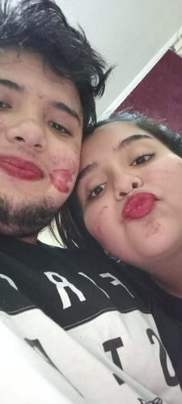
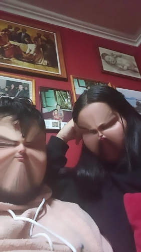
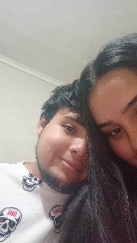

Hoy, mientras escribo esta carta, no puedo evitar sonreír al recordar los hermosos momentos que hemos compartido juntos durante los últimos 8 meses. Es increíble cómo el tiempo ha volado desde el día en que nos conocimos y comenzamos a salir juntos. Desde entonces, cada día ha sido una aventura emocionante y un nuevo capítulo en nuestra historia de amor.
Recuerdo nuestra primera cita, cómo temblaba de nerviosismo y emoción. Me cautivaste con tu belleza, tu ingenio y tu personalidad única. Desde entonces, hemos creado recuerdos hermosos juntos, como aquel día en que fuimos a la playa y disfrutamos de las vistas y la playa, o aquellos momentos en los que simplemente nos relajamos en casa viendo películas juntos.
Tú has sido mi pilar fundamental durante estos 8 meses, apoyándome en cada momento y haciendo que cada día sea mejor. Has sido mi confidente y mi mejor amiga, siempre dispuesta a escuchar mis problemas y ayudarme a superar cualquier obstáculo que se presente en mi camino.
No puedo imaginar mi vida sin ti. Eres mi complemento perfecto, la persona que ha hecho que cada día valga la pena vivir. Eres una bendición en mi vida y estoy agradecido por tenerte a mi lado. Eres mi razón de ser y cada momento a tu lado es un regalo.
Mi amor, quiero que sepas lo importante que eres para mí. Eres la persona más especial que he conocido en mi vida, y no puedo imaginar mi futuro sin ti. Espero seguir construyendo una vida juntos, llena de amor, risas y aventuras emocionantes. Te amo más de lo que puedo expresar con palabras.
Gracias por estos maravillosos 8 meses juntos. Eres mi todo y siempre estaré agradecido por tenerte en mi vida.
Con todo mi amor, tu pololo el pelotuda(Yordan Fernando).
|  |  |  |